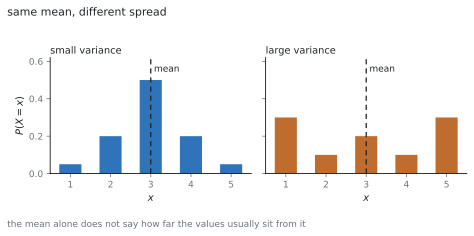
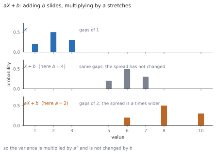

HL 4.14a — Variance of a discrete random variable（離散確率変数の分散）
- \(E(X)\) と \(E(X^{2})\) を、確率分布の表から計算できる。
- \(\mathrm{Var}(X) = E(X^{2})-\left[E(X)\right]^{2}\) を使える。
- 定義 \(\sum (x-\mu)^{2}P(X = x)\) との関係を説明できる。
- 標準偏差 \(\sigma = \sqrt{\mathrm{Var}(X)}\) を出せる。
- \(E(aX+b) = aE(X)+b\) と \(\mathrm{Var}(aX+b) = a^{2}\mathrm{Var}(X)\) を使える。
- 公平なゲーム（fair game）の条件を書ける。
The idea
1. Expected value again（期待値のおさらい）
離散確率変数 \(X\) の期待値は、値に確率をかけて足したものでした（SL 4.7）。
\[ E(X) = \mu = \sum x\,P(X = x) \tag{1}\]
シラバスは、この項目を SL とつないでいます。
Link to: discrete random variables (SL 4.7)
記号についても、こう書いてあります。
Use of the notation E(X), E(X 2), Var(X),
\(E(X^{2})\) は、\(x\) の代わりに \(x^{2}\) を使うだけです。
\[ E(X^{2}) = \sum x^{2}\,P(X = x) \tag{2}\]
\(E(X^{2})\) と \(\left[E(X)\right]^{2}\) はちがう数です。先に \(2\) 乗するか、後で \(2\) 乗するかのちがいです。
2. Variance: the average squared distance（分散：ずれの \(2\) 乗の平均）
平均だけでは、値が平均からどれくらい離れているかが分かりません。

そこで、平均からのずれを \(2\) 乗して、その期待値をとります。これが分散です。公式集の 4.14 の欄にあります。
Variance of a discrete random variable X
\[ \mathrm{Var}(X) = \sum (x-\mu)^{2}\,P(X = x) \tag{3}\]
ずれをそのまま足すと、正と負で打ち消し合って \(0\) になります。\(2\) 乗するのは、それを防ぐためです（第 2 節）。
3. The computing formula（計算しやすい形）
公式集には、同じ欄にもう \(1\) つの形が印刷されています。
\[ \mathrm{Var}(X) = E(X^{2})-\left[E(X)\right]^{2} \tag{4}\]
シラバスの言い方はこうです。
where Var(X) = E(X 2) − [E(X)]2
ふつうはこちらを使います。 \(\mu\) を求めてから各 \((x-\mu)^{2}\) を出すより、\(\sum x^{2}P(X = x)\) を出すほうが速いからです（第 1 節）。
\(\mathrm{Var}(X) \geq 0\) です。式 3 が \(2\) 乗の和だからです。
負の値が出たら、\(E(X^{2})\) と \(\left[E(X)\right]^{2}\) を入れかえていることがほとんどです。計算のいちばん手軽な見張りです。
4. Standard deviation（標準偏差）
分散は「\(2\) 乗したもの」なので、単位が元の量と合いません。平方根をとると、元の単位にもどります。
\[ \sigma = \sqrt{\mathrm{Var}(X)} \tag{5}\]
これを標準偏差（standard deviation）といいます。\(\sigma^{2}\) が分散、という書き方もよく使われます。
5. Linear transformations: the mean（\(1\) 次変換と平均）
\(X\) を \(aX+b\) に変えたときの平均は、公式集の 4.14 の欄にあります。
Linear transformation of a single random variable
\[ E(aX+b) = aE(X)+b \tag{6}\]
そのまま入れかえるだけです。「\(a\) 倍して \(b\) を足す」が、平均にもそのまま効きます。
6. Linear transformations: the variance（\(1\) 次変換と分散）
分散のほうは、\(b\) が消えます。
\[ \mathrm{Var}(aX+b) = a^{2}\,\mathrm{Var}(X) \tag{7}\]

\(b\) を足しても、ちらばりは変わりません。 全部を同じだけずらしただけだからです。
\(a\) 倍すると、ずれも \(a\) 倍になります。分散はそれを \(2\) 乗したものなので、\(a^{2}\) 倍です（第 4 節）。
\(a\) が負でも \(a^{2}\) は正です。\(\mathrm{Var}(-X) = \mathrm{Var}(X)\) です。
7. Fair games（公平なゲーム）
シラバスは、期待値の使い道として公平なゲームを挙げています。
Use of E(X) for “fair” games.
\(G\) を「\(1\) 回あたりのもうけ」（受け取る額から参加料を引いたもの）とすると、
\[ \text{fair} \quad \Longleftrightarrow \quad E(G) = 0 \tag{8}\]
です。長くくり返したとき、平均して損も得もしないという意味です。
参加料 \(k\) を求める問題なら、\(E(\text{受け取る額}) = k\) を解きます。
TI-Nspire CX II の Lists & Spreadsheet で、\(1\) 列目に \(x\) の値、\(2\) 列目に確率を入れます。
menu → 4: Statistics → 1: Stat Calculations → 1: One-Variable Statistics を選び、X1 List に値の列、Frequency List に確率の列を指定します。
\(\bar{x}\) が \(E(X)\)、\(\sigma_{x}\) が標準偏差です。分散は \(\sigma_{x}\) を \(2\) 乗します。\(s_{x}\) のほうではありません。
答案には、式を書いてください。 式 4 の形を書いてから数を入れます。
Paper 1 では使えません。 このページの例題と演習は、すべて手で解けるようにしてあります。
Why it works
なぜ \(E(X^{2})-\mu^{2}\) になるのか
式 3 の \((x-\mu)^{2}\) を展開します。
\[ \sum (x-\mu)^{2}P(X = x) = \sum \left(x^{2}-2\mu x+\mu^{2}\right)P(X = x) \]
\(3\) つに分けます。
\[ = \sum x^{2}P(X = x)-2\mu\sum x\,P(X = x)+\mu^{2}\sum P(X = x) \]
\(1\) つ目は \(E(X^{2})\)、\(2\) つ目の \(\sum x P(X = x)\) は \(\mu\)、\(3\) つ目の \(\sum P(X = x)\) は \(1\) です（SL 4.7）。
\[ = E(X^{2})-2\mu^{2}+\mu^{2} = E(X^{2})-\mu^{2} \]
確率の合計が \(1\) であることが効いています。
なぜ、ずれを \(2\) 乗するのか
ずれをそのまま足すと、かならず \(0\) になります。
\[ \sum (x-\mu)P(X = x) = \mu-\mu = 0 \]
正のずれと負のずれが打ち消し合うからです。これではちらばりを測れません。
絶対値を使う手もありますが、\(2\) 乗のほうが式として扱いやすく、式 4 のようなきれいな形になります。
\(2\) 乗したので単位も \(2\) 乗になります。それを平方根でもどしたのが標準偏差です（第 4 節）。
なぜ \(E(aX+b) = aE(X)+b\) なのか
定義に入れて、和を分けます。
\[ E(aX+b) = \sum (ax+b)P(X = x) = a\sum x\,P(X = x)+b\sum P(X = x) \]
\(1\) つ目は \(aE(X)\)、\(2\) つ目は \(b \times 1 = b\) です。
ここでも \(\sum P(X = x) = 1\) が効いています。
なぜ \(\mathrm{Var}(aX+b) = a^{2}\mathrm{Var}(X)\) なのか
\(Y = aX+b\) の平均は \(a\mu+b\) です。ずれを見ます。
\[ Y-E(Y) = (aX+b)-(a\mu+b) = a(X-\mu) \]
\(b\) が消えました。 ずらしても、平均との距離は変わらないということです。
これを \(2\) 乗すると \(a^{2}(X-\mu)^{2}\) なので、期待値をとって
\[ \mathrm{Var}(Y) = a^{2}E\left[(X-\mu)^{2}\right] = a^{2}\mathrm{Var}(X) \]
\(a^{2}\) なので、\(a\) の符号は結果に影響しません。
Worked examples
問題文は英語です。意味が理解できなかったら、問題文の下の「日本語訳」を開いてください。解説は日本語です。
例題も演習も、すべて電卓なしで解けます。 Paper 1 のつもりで解いてください。
例題 1 The random variable \(X\) has the distribution below.
| \(x\) | \(1\) | \(2\) | \(3\) |
|---|---|---|---|
| \(P(X = x)\) | \(0.2\) | \(0.5\) | \(0.3\) |
(a) Find \(E(X)\).
(b) Find \(E(X^{2})\).
(c) Find \(\mathrm{Var}(X)\) and the standard deviation of \(X\).
日本語訳
確率変数 \(X\) の分布が上の表で与えられています。
(a) \(E(X)\) を求めなさい。
(b) \(E(X^{2})\) を求めなさい。
(c) \(\mathrm{Var}(X)\) と \(X\) の標準偏差を求めなさい。
(a) 式 1 です。
\[ E(X) = (1)(0.2)+(2)(0.5)+(3)(0.3) = 0.2+1.0+0.9 = 2.1 \]
(b) \(x\) を \(x^{2}\) に変えるだけです（式 2）。
\[ E(X^{2}) = (1)(0.2)+(4)(0.5)+(9)(0.3) = 0.2+2.0+2.7 = 4.9 \]
(c) 式 4 に入れます。
\[ \mathrm{Var}(X) = 4.9-(2.1)^{2} = 4.9-4.41 = 0.49 \]
\[ \sigma = \sqrt{0.49} = 0.7 \]
検算。 定義のほうでも出します。 \((1-2.1)^{2}(0.2)+(2-2.1)^{2}(0.5)+(3-2.1)^{2}(0.3) = 0.242+0.005+0.243 = 0.49\) ✓
検算（範囲）。 \(E(X) = 2.1\) は \(1\) と \(3\) の間 ✓ また \(\mathrm{Var}(X) > 0\) ✓
(a) \(E(X) = (1)(0.2)+(2)(0.5)+(3)(0.3) = 2.1\)
(b) \(E(X^{2}) = (1)(0.2)+(4)(0.5)+(9)(0.3) = 4.9\)
(c) \(\mathrm{Var}(X) = 4.9-(2.1)^{2} = 0.49\), \(\ \sigma = 0.7\)
例題 2 For the random variable \(X\) in the previous example, \(E(X) = 2.1\) and \(\mathrm{Var}(X) = 0.49\). Let \(Y = 3X-2\). Find \(E(Y)\), \(\mathrm{Var}(Y)\) and the standard deviation of \(Y\).
日本語訳
前の例題の \(X\) について \(E(X) = 2.1\)、\(\mathrm{Var}(X) = 0.49\) です。\(Y = 3X-2\) とします。\(E(Y)\)、\(\mathrm{Var}(Y)\)、および \(Y\) の標準偏差を求めなさい。
\[ E(Y) = 3(2.1)-2 = 6.3-2 = 4.3 \]
\[ \mathrm{Var}(Y) = 3^{2}(0.49) = 9(0.49) = 4.41 \]
\[ \sigma_{Y} = \sqrt{4.41} = 2.1 \]
検算。 標準偏差は \(3\) 倍のはずです。\(3 \times 0.7 = 2.1\) ✓
検算（\(-2\) の効き方）。 平均には効いて、分散には効いていません ✓ ずらしただけだからです（第 6 節）。
\[E(Y) = 3(2.1)-2 = 4.3\]
\[\mathrm{Var}(Y) = 3^{2}(0.49) = 4.41\]
\[\sigma_{Y} = \sqrt{4.41} = 2.1\]
例題 3 The random variable \(X\) has the distribution below, where \(k\) is a constant.
| \(x\) | \(0\) | \(1\) | \(2\) |
|---|---|---|---|
| \(P(X = x)\) | \(0.3\) | \(k\) | \(0.5\) |
(a) Find \(k\).
(b) Find \(E(X)\) and \(\mathrm{Var}(X)\).
日本語訳
確率変数 \(X\) の分布が上の表で与えられています（\(k\) は定数）。
(a) \(k\) を求めなさい。
(b) \(E(X)\) と \(\mathrm{Var}(X)\) を求めなさい。
(a) 確率の合計は \(1\) です（SL 4.7）。
\[ 0.3+k+0.5 = 1, \qquad k = 0.2 \]
(b) \(x = 0\) の項は消えます。
\[ E(X) = (0)(0.3)+(1)(0.2)+(2)(0.5) = 1.2 \]
\[ E(X^{2}) = (0)(0.3)+(1)(0.2)+(4)(0.5) = 2.2 \]
\[ \mathrm{Var}(X) = 2.2-(1.2)^{2} = 2.2-1.44 = 0.76 \]
検算。 \(E(X) = 1.2\) は \(0\) と \(2\) の間です ✓
検算（分散の符号）。 \(2.2 > 1.44\) なので正 ✓ 入れかえていません。
(a) \(0.3+k+0.5 = 1\), so \(k = 0.2\)
(b) \(E(X) = (0)(0.3)+(1)(0.2)+(2)(0.5) = 1.2\)
\(E(X^{2}) = (0)(0.3)+(1)(0.2)+(4)(0.5) = 2.2\)
\(\mathrm{Var}(X) = 2.2-(1.2)^{2} = 0.76\)
例題 4 In a game a player pays \(\$k\) and then rolls a fair six-sided die, receiving as many dollars as the number shown. Let \(X\) be the number shown.
(a) Find \(E(X)\) and \(\mathrm{Var}(X)\).
(b) Find the value of \(k\) for which the game is fair.
(c) Find the variance of the player’s net gain.
日本語訳
あるゲームでは、\(\$k\) を払って公正な \(6\) 面のさいころを \(1\) 回投げ、出た目と同じ数のドルを受け取ります。\(X\) を出た目とします。
(a) \(E(X)\) と \(\mathrm{Var}(X)\) を求めなさい。
(b) ゲームが公平になる \(k\) の値を求めなさい。
(c) プレーヤーのもうけの分散を求めなさい。
(a) どの目も確率 \(\dfrac{1}{6}\) です。
\[ E(X) = \frac{1+2+3+4+5+6}{6} = \frac{21}{6} = \frac{7}{2} \]
\[ E(X^{2}) = \frac{1+4+9+16+25+36}{6} = \frac{91}{6} \]
\[ \mathrm{Var}(X) = \frac{91}{6}-\left(\frac{7}{2}\right)^{2} = \frac{182-147}{12} = \frac{35}{12} \]
(b) もうけは \(G = X-k\) です。式 6 から \(E(G) = E(X)-k\) なので、式 8 より
\[ \frac{7}{2}-k = 0, \qquad k = \frac{7}{2} \]
(c) \(G = X-k\) は \(a = 1\)、\(b = -k\) の形です（式 7）。
\[ \mathrm{Var}(G) = 1^{2}\,\mathrm{Var}(X) = \frac{35}{12} \]
検算。 \(\dfrac{91}{6} = \dfrac{182}{12}\)、\(\dfrac{49}{4} = \dfrac{147}{12}\) ✓ 通分が合っています。
検算（(c) の意味）。 参加料は毎回同じなので、ちらばりは変わりません ✓ \(b\) は分散に効きません。
(a) \(E(X) = \dfrac{21}{6} = \dfrac{7}{2}\), \(\ E(X^{2}) = \dfrac{91}{6}\), \(\ \mathrm{Var}(X) = \dfrac{91}{6}-\dfrac{49}{4} = \dfrac{35}{12}\)
(b) \(E(G) = E(X)-k = 0\) gives \(k = \dfrac{7}{2}\)
(c) \(\mathrm{Var}(G) = 1^{2}\mathrm{Var}(X) = \dfrac{35}{12}\)
試験ではこう書く
Each face of a fair die has probability \(\dfrac{1}{6}\), so \(E(X) = \dfrac{1}{6}(1+2+3+4+5+6) = \dfrac{21}{6} = \dfrac{7}{2}\) and \(E(X^{2}) = \dfrac{1}{6}(1+4+9+16+25+36) = \dfrac{91}{6}\). Hence
\[\mathrm{Var}(X) = E(X^{2})-\left[E(X)\right]^{2} = \frac{91}{6}-\frac{49}{4} = \frac{182-147}{12} = \frac{35}{12}\]
The player’s net gain is \(G = X-k\), since the fee is paid whatever happens. A game is fair when the expected gain is zero, and \(E(G) = E(X)-k\) by the rule for a linear transformation, so \(E(X)-k = 0\) and \(k = \dfrac{7}{2}\). The fair fee is therefore \(\$3.50\).
For the variance, \(G = X-k\) has \(a = 1\) and \(b = -k\), so \(\mathrm{Var}(G) = 1^{2}\mathrm{Var}(X) = \dfrac{35}{12}\). Subtracting a fixed fee moves every outcome by the same amount and so leaves the spread unchanged; only the mean is affected.
Common errors
\(E(X^{2})\) は先に \(2\) 乗してから平均、\(\left[E(X)\right]^{2}\) は平均を出してから \(2\) 乗です（第 1 節）。
入れかえると分散が負になります。負が出たら、まずここです。
\(\mathrm{Var}(aX+b) = a^{2}\mathrm{Var}(X)\) で、\(b\) は出てきません（式 7）。
全部を同じだけずらしても、たがいの距離は変わりません。
\(a\) ではなく \(a^{2}\) です。\(\mathrm{Var}(3X) = 9\mathrm{Var}(X)\) です。
\(a\) 倍になるのは標準偏差のほうです（\(a > 0\) のとき）。
\((-1)^{2} = 1\) なので、\(\mathrm{Var}(-X) = \mathrm{Var}(X)\) です。
分散はかならず \(0\) 以上です（第 3 節）。
\(\sigma = \sqrt{\mathrm{Var}(X)}\) です（式 5）。
問題文の standard deviation と variance を読み分けてください。平方根を取るのを忘れやすいところです。
公平の条件は \(E(\text{もうけ}) = 0\) であって、\(E(\text{受け取る額}) = 0\) ではありません（第 7 節）。
受け取る額の期待値が参加料に等しい、と読みかえると間違えません。
Exercises
各問題に、折りたたみが \(3\) つ付いています。日本語訳、解答例（答案用紙に書くべきこと。英語です）、解説（なぜそうなるか。日本語です）。
まず自分で解いて、次に解答例と見くらべてください。解説は、合わなかったときだけ開けば十分です。
1 The random variable \(X\) takes the values \(0\), \(1\), \(2\) with probabilities \(0.5\), \(0.3\), \(0.2\). Find \(E(X)\) and \(\mathrm{Var}(X)\).
日本語訳
確率変数 \(X\) が \(0\)、\(1\)、\(2\) をそれぞれ確率 \(0.5\)、\(0.3\)、\(0.2\) でとります。\(E(X)\) と \(\mathrm{Var}(X)\) を求めなさい。
\[E(X) = (0)(0.5)+(1)(0.3)+(2)(0.2) = 0.7\]
\[E(X^{2}) = (0)(0.5)+(1)(0.3)+(4)(0.2) = 1.1\]
\[\mathrm{Var}(X) = 1.1-(0.7)^{2} = 0.61\]
\(x = 0\) の項は、どちらの和でも消えます。計算が \(1\) つ減ります。
検算（範囲）。 \(0.7\) は \(0\) と \(2\) の間 ✓
検算（符号）。 \(1.1 > 0.49\) なので分散は正 ✓
2 Given \(E(X) = 4\) and \(\mathrm{Var}(X) = 9\), find \(E(2X+5)\) and \(\mathrm{Var}(2X+5)\).
日本語訳
\(E(X) = 4\)、\(\mathrm{Var}(X) = 9\) のとき、\(E(2X+5)\) と \(\mathrm{Var}(2X+5)\) を求めなさい。
\[E(2X+5) = 2(4)+5 = 13\]
\[\mathrm{Var}(2X+5) = 2^{2}(9) = 36\]
平均には \(b\) が効き、分散には効きません（第 6 節）。
検算（標準偏差）。 もとが \(3\)、変換後が \(6\) で \(2\) 倍 ✓
検算（\(a^{2}\)）。 \(2\) 倍ではなく \(4\) 倍です ✓
3 Given \(E(X) = 3\) and \(E(X^{2}) = 13\), find \(\mathrm{Var}(X)\) and the standard deviation of \(X\).
日本語訳
\(E(X) = 3\)、\(E(X^{2}) = 13\) のとき、\(\mathrm{Var}(X)\) と \(X\) の標準偏差を求めなさい。
\[\mathrm{Var}(X) = 13-3^{2} = 4, \qquad \sigma = 2\]
4 The random variable \(X\) takes the values \(1\), \(2\), \(3\), \(4\) with probabilities \(0.1\), \(0.2\), \(0.3\), \(0.4\). Find \(E(X)\), \(\mathrm{Var}(X)\) and \(\sigma\).
日本語訳
確率変数 \(X\) が \(1\)、\(2\)、\(3\)、\(4\) をそれぞれ確率 \(0.1\)、\(0.2\)、\(0.3\)、\(0.4\) でとります。\(E(X)\)、\(\mathrm{Var}(X)\)、\(\sigma\) を求めなさい。
\[E(X) = 0.1+0.4+0.9+1.6 = 3\]
\[E(X^{2}) = 0.1+0.8+2.7+6.4 = 10\]
\[\mathrm{Var}(X) = 10-3^{2} = 1, \qquad \sigma = 1\]
確率が右に寄っているので、平均も右寄りです。\(3\) は真ん中の \(2.5\) より大きいです。
検算（合計）。 \(0.1+0.2+0.3+0.4 = 1\) ✓
検算（範囲）。 \(\sigma = 1\) で、値の幅 \(3\) に対して小さすぎず大きすぎません ✓
5 The random variable \(X\) takes the values \(1\), \(2\), \(3\) with probabilities \(k\), \(2k\), \(3k\). Find \(k\), then find \(E(X)\) and \(\mathrm{Var}(X)\).
日本語訳
確率変数 \(X\) が \(1\)、\(2\)、\(3\) をそれぞれ確率 \(k\)、\(2k\)、\(3k\) でとります。\(k\) を求め、\(E(X)\) と \(\mathrm{Var}(X)\) を求めなさい。
\[k+2k+3k = 1 \ \Rightarrow \ k = \frac{1}{6}\]
\[E(X) = \frac{1+4+9}{6} = \frac{7}{3}, \qquad E(X^{2}) = \frac{1+8+27}{6} = 6\]
\[\mathrm{Var}(X) = 6-\left(\frac{7}{3}\right)^{2} = 6-\frac{49}{9} = \frac{5}{9}\]
\(E(X)\) の分子は \(1(1)+2(2)+3(3)\)、\(E(X^{2})\) の分子は \(1(1)+4(2)+9(3)\) です。分母はどちらも \(6\) です。
検算（範囲）。 \(\dfrac{7}{3} \approx 2.33\) で、\(1\) と \(3\) の間 ✓
検算（通分）。 \(6 = \dfrac{54}{9}\) なので \(\dfrac{54-49}{9} = \dfrac{5}{9}\) ✓
6 Given \(\mathrm{Var}(X) = 5\), find \(\mathrm{Var}(3X-1)\) and \(\mathrm{Var}(-X)\).
日本語訳
\(\mathrm{Var}(X) = 5\) のとき、\(\mathrm{Var}(3X-1)\) と \(\mathrm{Var}(-X)\) を求めなさい。
\[\mathrm{Var}(3X-1) = 3^{2}(5) = 45\]
\[\mathrm{Var}(-X) = (-1)^{2}(5) = 5\]
\(-1\) は \(b\) なので効きません。\(3\) は \(a\) なので \(2\) 乗して効きます（式 7）。
\(-X\) は \(a = -1\) です。符号は \(2\) 乗で消えます。
検算（符号）。 どちらも正 ✓ 分散が負になることはありません。
検算（意味）。 \(-X\) は \(X\) を裏返しただけで、ちらばりは同じ ✓
7 In a game a player pays \(\$c\) and receives \(\$10\) with probability \(0.2\), and nothing otherwise. Find the value of \(c\) that makes the game fair.
日本語訳
あるゲームでは、\(\$c\) を払い、確率 \(0.2\) で \(\$10\) を受け取り、そうでなければ何も受け取りません。ゲームが公平になる \(c\) の値を求めなさい。
\[E(\text{amount received}) = (10)(0.2)+(0)(0.8) = 2\]
The game is fair when \(E(\text{gain}) = 0\), that is \(2-c = 0\), so \(c = 2\).
受け取る額の期待値が、参加料に等しいのが公平です（第 7 節）。
検算。 \(E(\text{gain}) = 2-2 = 0\) ✓
検算（\(c\) が大きいと）。 \(c = 3\) なら \(E(\text{gain}) = -1\) で、プレーヤーの損 ✓
8 Show that \(\mathrm{Var}(aX+b) = a^{2}\mathrm{Var}(X)\) for constants \(a\) and \(b\).
日本語訳
定数 \(a\)、\(b\) について \(\mathrm{Var}(aX+b) = a^{2}\mathrm{Var}(X)\) を示しなさい。
Let \(Y = aX+b\). Then \(E(Y) = a\mu+b\), where \(\mu = E(X)\).
\[Y-E(Y) = (aX+b)-(a\mu+b) = a(X-\mu)\]
\[\mathrm{Var}(Y) = E\left[(Y-E(Y))^{2}\right] = E\left[a^{2}(X-\mu)^{2}\right] = a^{2}\mathrm{Var}(X)\]
要は「\(b\) が引き算で消える」ことです（第 4 節）。
\(a^{2}\) は定数なので、期待値の外に出せます。
検算（\(a = 1\)）。 \(\mathrm{Var}(X+b) = \mathrm{Var}(X)\) ✓ ずらしても変わりません。
検算（\(b = 0\)）。 \(\mathrm{Var}(aX) = a^{2}\mathrm{Var}(X)\) ✓ 見慣れた形です。
試験ではこう書く
Write \(\mu = E(X)\) and \(Y = aX+b\). By the rule for the mean of a linear transformation, \(E(Y) = aE(X)+b = a\mu+b\).
The deviation of \(Y\) from its mean is therefore
\[Y-E(Y) = (aX+b)-(a\mu+b) = aX-a\mu = a(X-\mu)\]
The constant \(b\) cancels, which is the key step: adding a constant moves every value and the mean by the same amount, so all deviations are unchanged.
Squaring gives \((Y-E(Y))^{2} = a^{2}(X-\mu)^{2}\), and taking expectations, with the constant \(a^{2}\) taken outside,
\[\mathrm{Var}(Y) = E\left[a^{2}(X-\mu)^{2}\right] = a^{2}E\left[(X-\mu)^{2}\right] = a^{2}\mathrm{Var}(X)\]
Since \(a^{2} \geq 0\), the sign of \(a\) has no effect, which is why \(\mathrm{Var}(-X) = \mathrm{Var}(X)\).
9 Explain why \(\mathrm{Var}(X) = E(X^{2})-\left[E(X)\right]^{2}\) is usually easier to use than the definition \(\sum (x-\mu)^{2}P(X = x)\).
日本語訳
\(\mathrm{Var}(X) = E(X^{2})-\left[E(X)\right]^{2}\) のほうが、定義 \(\sum (x-\mu)^{2}P(X = x)\) より使いやすいのはなぜかを説明しなさい。
The definition requires \(\mu\) first, and then a separate subtraction and squaring for every value of \(x\).
The other form needs only two sums, \(\sum x P(X = x)\) and \(\sum x^{2}P(X = x)\), which can be built from the same table in one pass.
It also avoids rounding a value of \(\mu\) that is not exact and then using it many times.
計算の回数がちがいます。 定義では、値の個数だけ引き算と \(2\) 乗が必要です。
\(\mu\) が \(\dfrac{7}{3}\) のような分数のとき、差を毎回作るのは面倒です（演習 \(5\) がその例です）。
検算（同じ答えか）。 例題 \(1\) で、両方とも \(0.49\) になりました ✓
検算（どちらが速いか）。 例題 \(1\) では、定義だと \(3\) 回の引き算と \(2\) 乗が必要でした ✓
試験ではこう書く
Both formulas give the same number, but they ask for different amounts of work.
The definition \(\sum (x-\mu)^{2}P(X = x)\) cannot be started until \(\mu\) has been found, and then for each value of \(x\) it needs a subtraction, a squaring and a multiplication. With \(n\) values that is \(n\) separate three-step calculations, done after a first pass through the table.
The form \(E(X^{2})-\left[E(X)\right]^{2}\) needs only the two sums \(\sum x P(X = x)\) and \(\sum x^{2}P(X = x)\). Both can be written down directly from the same table, and the squaring happens only once at the end.
There is also an accuracy reason. When \(\mu\) is not a terminating decimal, the definition uses a rounded value of it once for every term, so rounding errors accumulate. The other form uses exact entries from the table and subtracts a single squared mean at the very end.
10 A student writes \(\mathrm{Var}(2X) = 2\mathrm{Var}(X)\) and \(\mathrm{Var}(X+3) = \mathrm{Var}(X)+3\). Identify both errors and give the correct results.
日本語訳
ある生徒が \(\mathrm{Var}(2X) = 2\mathrm{Var}(X)\)、\(\mathrm{Var}(X+3) = \mathrm{Var}(X)+3\) と書きました。\(2\) つのまちがいを指摘し、正しい結果を書きなさい。
The multiplier is squared, so \(\mathrm{Var}(2X) = 2^{2}\mathrm{Var}(X) = 4\mathrm{Var}(X)\).
An added constant does not affect the variance, so \(\mathrm{Var}(X+3) = \mathrm{Var}(X)\).
The rule \(\mathrm{Var}(aX+b) = a^{2}\mathrm{Var}(X)\) covers both cases.
生徒は、平均の規則をそのまま分散に使ってしまいました。 平均なら \(E(2X) = 2E(X)\)、\(E(X+3) = E(X)+3\) で正しいのです。
分散は「ずれの \(2\) 乗」なので、\(a\) は \(2\) 乗で効き、\(b\) は消えます（第 4 節）。
検算（具体例）。 \(X\) が \(0\) と \(2\) を確率 \(\dfrac{1}{2}\) ずつでとるなら \(\mathrm{Var}(X) = 1\) ✓
検算（\(2X\) のほう）。 \(2X\) は \(0\) と \(4\) を半々でとり、分散は \(4\) ✓ \(2\) 倍ではなく \(4\) 倍です。
試験ではこう書く
Both statements apply the rule for the mean to the variance. For the mean, \(E(aX+b) = aE(X)+b\), so a multiplier passes straight through and an added constant is added on. The variance behaves differently, because it measures squared deviations from the mean.
For the first statement, the correct rule is \(\mathrm{Var}(aX+b) = a^{2}\mathrm{Var}(X)\), so \(\mathrm{Var}(2X) = 2^{2}\mathrm{Var}(X) = 4\mathrm{Var}(X)\). Doubling every value doubles every deviation from the mean, and squaring those deviations multiplies the variance by four.
For the second statement, adding \(3\) moves every value and the mean by \(3\), so every deviation is unchanged and \(\mathrm{Var}(X+3) = \mathrm{Var}(X)\). A constant cannot be added to a variance in any case, since the variance is measured in squared units.
A concrete check: if \(X\) takes the values \(0\) and \(2\) with probability \(\dfrac{1}{2}\) each, then \(\mathrm{Var}(X) = 1\), while \(2X\) takes \(0\) and \(4\) and has variance \(4\), and \(X+3\) takes \(3\) and \(5\) and still has variance \(1\).